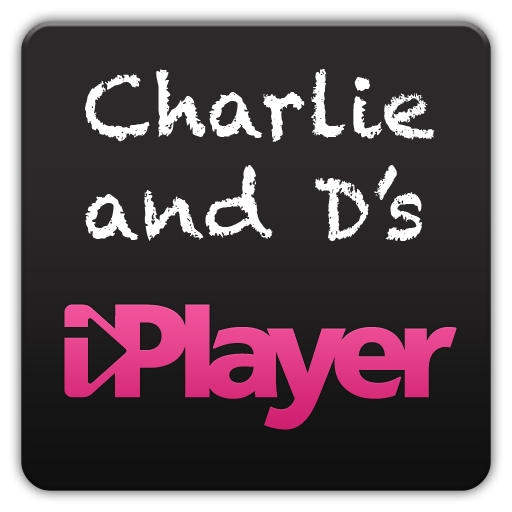

Charlie and Dineshraj present...

Second Screen Experience
What is it?
- The ability to remotely control iPlayer
- Related content surfaced
Motivation
- No current second screen experience for iPlayer
- People
are lazy want convenience
Approach
- Using HTML5 WebSockets
- NodeJS implementation of websockets
- Set up a server
- Have clients connected to it broadcasting events
Features
- Bi-directional
- Play/Pause
- Adjust volume/mute
- Rewind/forward 30 seconds
- Can change current programme
Features
- Shows current programme information
- Shows 'More Like This' content
- Can save on homescreen in iOS/Android
- Can control your iPad with your other iPad
BBC Integration
- SMP
- BUMPv3
- Dynamite + JSONP
Other cool things
- CSS3 viewport-sized fonts
- Webfonts
- HTML5 volume slider
Future improvements
- Hook it into twitter
- Send first broadcast date
- Send current progress
- Have the ability to resume on another device (Josh!)